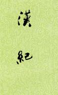

| 历史史籍 > |
| 汉纪 |
| 作者：[东汉]荀悦 编撰 |
|
汉纪，编年体断代史，30卷，约18万余言。汉献帝时常苦班固的《汉书》文繁难省，于建安三年（198年）命荀悦依《左传》体例，删略《汉书》改编撰写。经过三年悉心抄撰，于建安五年（200年）成书。时人称此书“辞约事详，论辨多美”，“省约易习，有便于用”。本书之成，也推动了往后编年体史著述的发展。 荀悦（148～209），字仲豫，颍川人。献帝时，应曹操之召，任黄门侍郎，累迁至秘书监、侍中。另著有《崇德》、《申鉴》。 本书虽历来获好评多，有的甚至称他书抄得好超过了原著，但其叙事，可读性较差。又，此文本原只有句读，序言及其他极少部分标点了一下，不介意的看。 [2019/5/25，整理] |
 |
| ·序 |
| 高祖纪 (2) (3) (4) (5) (6) (7) (8) (9) (10) (11) (12) (13) (14) (15) |
| 惠帝纪 (2) (3) (4) (5) (6) (7) |
| 高后纪 (2) (3) (4) |
| 文帝纪 (2) (3) (4) (5) (6) (7) (8) (9) (10) (11) (12) (13) |
| 景帝纪 (2) (3) (4) (5) (6) (7) (8) (9) |
| 武帝纪 (2) (3) (4) (5) (6) (7) (8) (9) (10) (11) (12) (13) (14) (15) (16) (17) (18) (19) (20) (21) |
| 武帝纪(22) (23) (24) (25) (26) (27) (28) (29) (30) (31) (32) (33) (34) (35) (36) (37) (38) (39) (40) |
| 昭帝纪 (2) (3) (4) (5) (6) (7) |
| 宣帝纪 (2) (3) (4) (5) (6) (7) (8) (9) (10) (11) (12) (13) (14) (15) (16) (17) (18) (19) (20) (21) (22) (23) |
| 元帝纪 (2) (3) (4) (5) (6) (7) (8) (9) (10) (11) (12) (13) |
| 成帝纪 (2) (3) (4) (5) (6) (7) (8) (9) (10) (11) (12) (13) (14) (15) (16) (17) (18) (19) (20) (21) (22) |
| 哀帝纪 (2) (3) (4) (5) (6) (7) |
| 平帝纪 (2) (3) (4) (5) |
| 王莽纪 (2) (3) (4) (5) (6) (7) (8) (9) (10) |
| ·跋 |